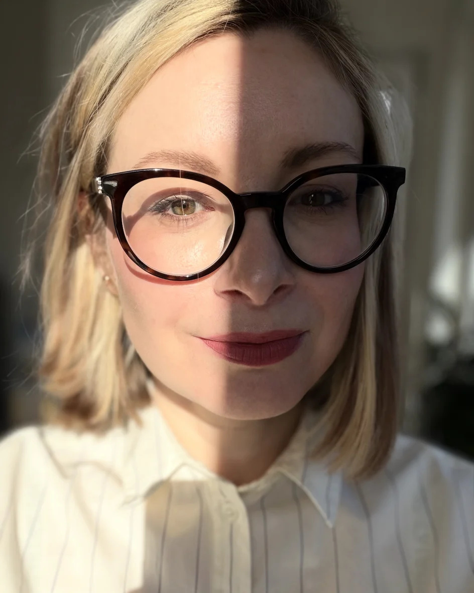

I design for people. Design craft, UX and UI. I think a step ahead, fix the process and spot problems before they hit the team. The routine I automate with AI, and I decide where it matters. I need a place that inspires me and lets me grow.
Sometimes a brief asks for one screen, but I can see the real problem is in the process.
So I mention it, and put together a short presentation to show stakeholders why the change is worth it.

Translated from Czech.
“Lucie got through onboarding exceptionally fast and was a full member of the team within days. Her biggest strength is understanding complex problems: she thinks in context and tries to grasp the whole project, not just her part. That’s why she flags risks that would otherwise hit us weeks later.
In our team she was also the AI leader. She led the internal AI initiative and prepared an AI implementation programme for the whole design team, including training. She has what it takes to be a team leader.”
“You can always rely on her work: she’s responsible, fast and efficient, and keeps the quality high. I also value her initiative. She comes with her own ideas and wants to move things forward.
Sharing what she learns comes naturally to her, and the whole team grows with it. She brings new ways of working with AI into the team.”
Next, I want to work with AI product builders. The tools change every month. I want to be the one who helps the team keep up, working right next to the designers.
Prague · Czech / English